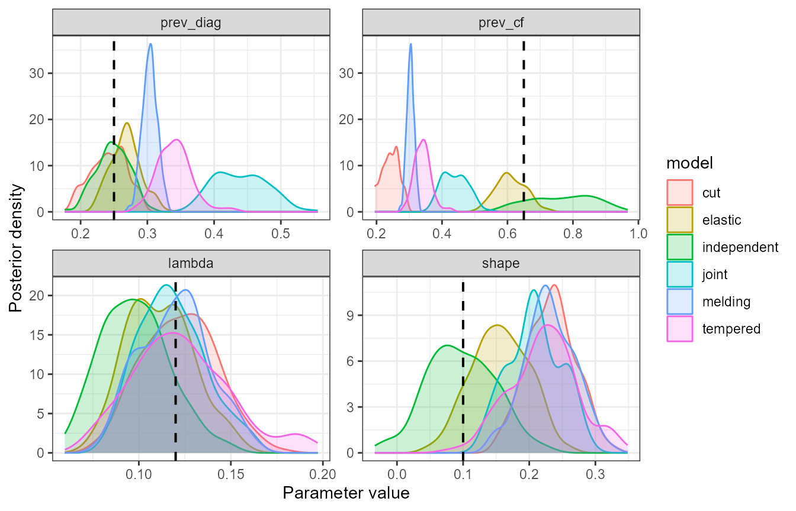
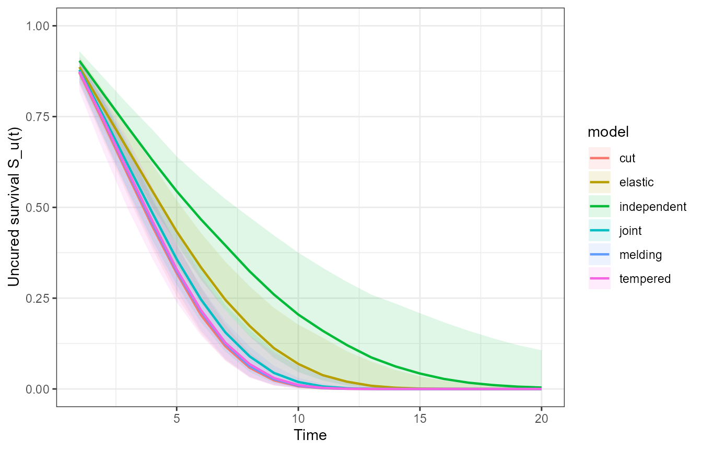

1. Comparing Synthesis Models: Cut, Joint, Melding, Elastic, and Tempered Inference
Source:vignettes/model-comparison-simulation.Rmd
model-comparison-simulation.RmdOverview
In tuberculosis (TB) epidemiology, we often want to combine two complementary sources of evidence:
- Module 1 (\(M_1\), Starting State Occupancy / LTBI Survey Data \(Y_1\)): Cross-sectional screening or diagnostic survey data informing baseline latent TB infection (LTBI) prevalence \(\pi_{\text{diag}} = \text{logit}^{-1}(\alpha_{\text{diag}})\) and diagnostic test accuracy (\(\text{sens}, \text{spec}\)).
- Module 2 (\(M_2\), Active TB Progression Survival Data \(Y_2\)): Longitudinal follow-up data \((t_i, d_i)_{i=1}^{N_{\text{surv}}}\) informing the uncured progression density \(f_u(t \mid \psi)\) and survival \(S_u(t \mid \psi)\) (with hazard parameters \(\psi = (\lambda, \gamma)\)) alongside the survival cohort’s uncured LTBI fraction \(\pi_{\text{surv}} = \text{logit}^{-1}(\alpha_{\text{surv}})\).
When both datasets represent the same underlying target population without selection bias (\(\pi_{\text{diag}} = \pi_{\text{surv}}\)), a Joint model pools information across both modules. However, if the longitudinal progression cohort suffers from selection bias, case-mix differences, or incomplete follow-up (\(\pi_{\text{surv}} \neq \pi_{\text{diag}}\)), naive joint pooling allows the biased survival data \(Y_2\) to corrupt the LTBI prevalence estimate \(\pi_{\text{diag}}\).
EvidSynthTB provides six synthesis
strategies ("joint", "cut",
"independent", "melding",
"elastic", and "tempered") together with
quantitative comparison tools (compare_evidsynth(),
evaluate_comparison(), and
diagnose_feedback()).
Mathematical Formulation of the Six Synthesis Models
Module Likelihoods
Let \(\phi = (\alpha_{\text{diag}}, \boldsymbol{\beta}, \text{sens}, \text{spec})\) denote the Module 1 parameters, where \(\pi_{\text{diag}} = \text{logit}^{-1}(\alpha_{\text{diag}})\). For \(M\) aggregate survey studies with \(y_m\) positive tests out of \(n_m\) individuals tested:
\[ L_1(Y_1 \mid \phi) = \prod_{m=1}^{M} \binom{n_m}{y_m} p_{\text{pos}, m}^{y_m} (1 - p_{\text{pos}, m})^{n_m - y_m}, \qquad p_{\text{pos}, m} = \pi_{\text{diag}} \, \text{sens} + (1 - \pi_{\text{diag}})(1 - \text{spec}). \]
Let \(\psi = (\lambda, \gamma)\) denote the uncured survival parameters in Module 2, with uncured density \(f_u(t_i \mid \psi)\), uncured survival \(S_u(t_i \mid \psi)\), event indicator \(d_i \in \{0, 1\}\) (\(1 = \text{progressed to active TB}\), \(0 = \text{right-censored}\)), and uncured fraction \(\pi_{\text{surv}} = \text{logit}^{-1}(\alpha_{\text{surv}})\). Since individuals without LTBI cannot progress to active TB from baseline infection, Module 2 forms a mixture cure model:
\[ L_2(Y_2 \mid \alpha_{\text{surv}}, \psi) = \prod_{i=1}^{N_{\text{surv}}} \left[ \pi_{\text{surv}} \, f_u(t_i \mid \psi) \right]^{d_i} \left[ (1 - \pi_{\text{surv}}) + \pi_{\text{surv}} \, S_u(t_i \mid \psi) \right]^{1 - d_i}. \]
1. Full Joint Model (model = "joint")
Assumes \(\alpha_{\text{surv}} = \alpha_{\text{diag}} = \alpha\) (\(\pi_{\text{surv}} = \pi_{\text{diag}} = \pi\)) with unrestricted bidirectional information flow between \(Y_1\) and \(Y_2\):
\[ p_{\text{joint}}(\phi, \psi \mid Y_1, Y_2) \propto p(\phi) \, p(\psi) \, L_1(Y_1 \mid \phi) \, L_2(Y_2 \mid \alpha_{\text{diag}}, \psi). \]
2. Independent Model (model = "independent")
Fits disjoint modules with separate independent priors \(p(\alpha_{\text{diag}})\) and \(p(\alpha_{\text{surv}})\) and zero information sharing:
\[ p_{\text{ind}}(\phi, \alpha_{\text{surv}}, \psi \mid Y_1, Y_2) = p(\phi \mid Y_1) \, p(\alpha_{\text{surv}}, \psi \mid Y_2). \]
3. True Two-Stage Bayesian Cut Model
(model = "cut")
Following Plummer (2015), the Cut distribution allows information to flow forward from the more reliable survey module \(M_1\) into the survival module \(M_2\), while completely blocking feedback from \(Y_2\) back into \(\phi\):
\[ p_{\text{cut}}(\phi, \psi \mid Y_1, Y_2) = p(\phi \mid Y_1) \, p(\psi \mid Y_2, \phi) = \frac{p(\phi) L_1(Y_1 \mid \phi)}{p(Y_1)} \cdot \frac{p(\psi) L_2(Y_2 \mid \alpha_{\text{diag}}, \psi)}{\int p(\psi') L_2(Y_2 \mid \alpha_{\text{diag}}, \psi') \, d\psi'}. \]
Note that integrating out \(\psi\)
yields the exact Stage 1 marginal \(\int
p_{\text{cut}}(\phi, \psi \mid Y_1, Y_2) \, d\psi = p(\phi \mid
Y_1)\), regardless of how misspecified or biased \(Y_2\) is. In EvidSynthTB, this
is implemented via two-stage multiple-imputation HMC: Stage 1 samples
\(\phi^{(s)} \sim p(\phi \mid Y_1)\)
using ltbi_module.stan, and Stage 2 samples \(\psi^{(s)} \sim p(\psi \mid Y_2,
\phi^{(s)})\) conditional on fixed \(\phi^{(s)}\).
4. Normal Portal / Markov Melding Plug-In
(model = "melding")
Summarizes Stage 1 information on the logit prevalence scale via normal portal summaries \((\hat{\mu}_m, \hat{\sigma}_m)\) and combines them with the Stage 2 mixture cure likelihood in a single joint model (\(\alpha_{\text{surv}} = \alpha_{\text{diag}} = \alpha\)):
\[ p_{\text{meld}}(\alpha, \psi \mid \hat{\mu}, \hat{\sigma}, Y_2) \propto p(\alpha) \, p(\psi) \left[ \prod_{m=1}^{M} \mathcal{N}(\hat{\mu}_m \mid \alpha, \hat{\sigma}_m^2) \right] L_2(Y_2 \mid \alpha, \psi). \]
5. Elastic / Hierarchical Coupling
(model = "elastic")
Links the diagnostic and survival logit prevalences through a
Gaussian hierarchical prior with tuneable coupling standard deviation
\(\tau > 0\)
(tau_couple):
\[ p_{\text{elastic}}(\phi, \alpha_{\text{surv}}, \psi \mid Y_1, Y_2) \propto p(\phi) \, p(\psi) \, L_1(Y_1 \mid \phi) \, \mathcal{N}(\alpha_{\text{surv}} \mid \alpha_{\text{diag}}, \tau^2) \, L_2(Y_2 \mid \alpha_{\text{surv}}, \psi). \]
- As \(\tau \to 0\), \(\alpha_{\text{surv}} \to \alpha_{\text{diag}}\) (Joint model).
- As \(\tau \to \infty\), \(\alpha_{\text{surv}}\) and \(\alpha_{\text{diag}}\) decouple (Independent model).
6. Tempered / Power-Likelihood Synthesis
(model = "tempered")
Down-weights the influence of the survival likelihood \(L_2\) using a power weight \(w \in [0, 1]\) (w_temper):
\[ p_{\text{temp}}(\phi, \psi \mid Y_1, Y_2; w) \propto p(\phi) \, p(\psi) \, L_1(Y_1 \mid \phi) \, \left[ L_2(Y_2 \mid \alpha_{\text{diag}}, \psi) \right]^w. \]
Quantitative Metrics for Comparing Models
EvidSynthTB provides two dedicated functions to compare
models:
-
evaluate_comparison(comp, truth)(for simulation studies with known truth \(\theta_{\text{true}}\)):- Bias & RMSE: \[ \text{Bias}(\hat{\theta}) = \mathbb{E}[\theta \mid Y] - \theta_{\text{true}}, \qquad \text{RMSE}(\hat{\theta}) = \sqrt{\mathbb{E}\!\left[(\theta - \theta_{\text{true}})^2 \mid Y\right]}. \]
- Uncured Survival Curve Integrated Absolute Error (IAE) & Integrated RMSE (IRMSE): \[ \text{IAE} = \frac{1}{t_{\text{lim}}} \sum_{t=1}^{t_{\text{lim}}} \left| \hat{S}_u(t) - S_u^{\text{true}}(t) \right|, \qquad \text{IRMSE} = \sqrt{\frac{1}{t_{\text{lim}}} \sum_{t=1}^{t_{\text{lim}}} \left( \hat{S}_u(t) - S_u^{\text{true}}(t) \right)^2}. \]
-
diagnose_feedback(comp)(for both real and simulated data):-
Feedback Shift (\(\Delta_{\text{fb}}\)): Measures
how strongly the survival data pull the diagnostic prevalence \(\pi_{\text{diag}}\) away from the
zero-feedback
"cut"baseline: \[ \Delta_{\text{fb}}(M) = \mathbb{E}_M[\pi_{\text{diag}} \mid Y_1, Y_2] - \mathbb{E}_{\text{cut}}[\pi_{\text{diag}} \mid Y_1]. \] -
Inter-Module Conflict (\(\Delta_{\text{prev}}\)): Evaluates
discrepancy between the survival cure-fraction prevalence and survey
prevalence (informative in
"independent"and"elastic"models): \[ \Delta_{\text{prev}} = \pi_{\text{surv}} - \pi_{\text{diag}}, \qquad P_{\text{conflict}} = P(\pi_{\text{surv}} > \pi_{\text{diag}} \mid Y_1, Y_2). \] - Survival WAIC: Computed from the pointwise survival log-likelihood \(\ell_{i}^{(s)} = \log L_{2,i}(\theta^{(s)})\) across posterior draws \(s = 1, \dots, S\): \[ \text{WAIC}_{\text{surv}} = -2 \sum_{i=1}^{N_{\text{surv}}} \left( \log \left( \frac{1}{S} \sum_{s=1}^{S} \exp(\ell_i^{(s)}) \right) - \text{Var}_{s}(\ell_i^{(s)}) \right). \]
-
Feedback Shift (\(\Delta_{\text{fb}}\)): Measures
how strongly the survival data pull the diagnostic prevalence \(\pi_{\text{diag}}\) away from the
zero-feedback
Worked Example: Agreement vs. Conflict Scenarios
Scenario A: Datasets in Agreement (\(\pi_{\text{diag}} = \pi_{\text{surv}} = 0.30\))
sim_agree <- create_fake_data(
N_surv = 300,
n_survey = c(1000, 1000),
p_ltbi = 0.30,
p_ltbi_surv = 0.30,
sens = 0.85,
spec = 0.95,
surv_dist = "gompertz",
shape = 0.10,
rate = 0.12,
seed = 101
)
comp_agree <- compare_evidsynth(
prevalence_data = sim_agree$prevalence_data,
progression_data = sim_agree$progression_data[, c("t", "d")],
models = c("joint", "cut", "independent", "melding", "elastic", "tempered"),
imperfect_test = TRUE,
chains = 1,
n_iter = 400,
n_burnin = 200,
n_cut_subsamples = 10,
seed = 101
)
knitr::kable(diagnose_feedback(comp_agree), digits = 3)| model | prev_diag_mean | prev_diag_sd | prev_cf_mean | prev_cf_sd | feedback_shift | conflict_diff_median | conflict_prob_pos | waic_surv | elpd_waic | p_waic |
|---|---|---|---|---|---|---|---|---|---|---|
| joint | 0.287 | 0.020 | 0.287 | 0.020 | 0.001 | 0.000 | 0.00 | 608.345 | -304.173 | 1.982 |
| cut | 0.285 | 0.020 | 0.285 | 0.020 | 0.000 | 0.000 | 0.00 | 608.125 | -304.062 | 1.869 |
| independent | 0.282 | 0.032 | 0.495 | 0.207 | -0.004 | 0.161 | 0.85 | 608.547 | -304.274 | 2.240 |
| melding | 0.282 | 0.011 | 0.282 | 0.011 | -0.003 | 0.000 | 0.00 | 607.525 | -303.762 | 1.567 |
| elastic | 0.284 | 0.023 | 0.332 | 0.063 | -0.001 | 0.042 | 0.75 | 608.031 | -304.015 | 1.922 |
| tempered | 0.289 | 0.022 | 0.289 | 0.022 | 0.004 | 0.000 | 0.00 | 611.695 | -305.848 | 3.613 |
When the two data sources agree, "joint",
"cut", "elastic", and "tempered"
all center near the true prevalence \(\pi =
0.30\), with minimal feedback shift (\(\Delta_{\text{fb}} \approx 0\)).
Scenario B: Datasets in Conflict (\(\pi_{\text{diag}} = 0.25\), \(\pi_{\text{surv}} = 0.65\))
Now suppose the progression survival cohort has strong selection bias (\(\pi_{\text{surv}} = 0.65\)) relative to the population survey (\(\pi_{\text{diag}} = 0.25\)):
sim_conflict <- create_fake_data(
N_surv = 300,
n_survey = c(1000, 1000),
p_ltbi = 0.25,
p_ltbi_surv = 0.65,
sens = 0.85,
spec = 0.95,
surv_dist = "gompertz",
shape = 0.10,
rate = 0.12,
seed = 202
)
comp_conflict <- compare_evidsynth(
prevalence_data = sim_conflict$prevalence_data,
progression_data = sim_conflict$progression_data[, c("t", "d")],
models = c("joint", "cut", "independent", "melding", "elastic", "tempered"),
imperfect_test = TRUE,
chains = 1,
n_iter = 400,
n_burnin = 200,
n_cut_subsamples = 10,
seed = 202
)
knitr::kable(diagnose_feedback(comp_conflict), digits = 3)| model | prev_diag_mean | prev_diag_sd | prev_cf_mean | prev_cf_sd | feedback_shift | conflict_diff_median | conflict_prob_pos | waic_surv | elpd_waic | p_waic |
|---|---|---|---|---|---|---|---|---|---|---|
| joint | 0.440 | 0.040 | 0.440 | 0.040 | 0.198 | 0.000 | 0 | 1072.122 | -536.061 | 2.905 |
| cut | 0.242 | 0.026 | 0.242 | 0.026 | 0.000 | 0.000 | 0 | 1180.799 | -590.399 | 3.770 |
| independent | 0.248 | 0.025 | 0.766 | 0.099 | 0.006 | 0.527 | 1 | 1045.215 | -522.608 | 2.673 |
| melding | 0.304 | 0.011 | 0.304 | 0.011 | 0.062 | 0.000 | 0 | 1129.555 | -564.777 | 1.906 |
| elastic | 0.268 | 0.022 | 0.611 | 0.046 | 0.026 | 0.341 | 1 | 1047.252 | -523.626 | 2.334 |
| tempered | 0.341 | 0.026 | 0.341 | 0.026 | 0.099 | 0.000 | 0 | 1112.911 | -556.456 | 4.163 |
Notice what happens under conflict:
-
"cut"keepsprev_diagstrictly anchored to the unbiased Stage 1 survey posterior (\(\Delta_{\text{fb}} = 0\)). -
"joint"and"melding"pullprev_diagupward toward the biased survival cohort. -
"independent"and"elastic"detect the conflict viaconflict_diff_median > 0andconflict_prob_posnear \(1.0\), while keepingprev_diagprotected from the survival cohort’s upward bias.
eval_conflict <- evaluate_comparison(comp_conflict, truth = sim_conflict$truth)
knitr::kable(
dplyr::filter(eval_conflict$parameter_metrics, variable %in% c("prev_diag", "lambda", "shape")),
digits = 3
)| model | variable | truth | post_mean | post_median | post_sd | bias | rmse | cov_95 | width_95 |
|---|---|---|---|---|---|---|---|---|---|
| joint | prev_diag | 0.25 | 0.440 | 0.439 | 0.040 | 0.190 | 0.194 | FALSE | 0.140 |
| joint | lambda | 0.12 | 0.118 | 0.116 | 0.018 | -0.002 | 0.018 | TRUE | 0.070 |
| joint | shape | 0.10 | 0.209 | 0.209 | 0.039 | 0.109 | 0.115 | FALSE | 0.141 |
| cut | prev_diag | 0.25 | 0.242 | 0.243 | 0.026 | -0.008 | 0.027 | TRUE | 0.091 |
| cut | lambda | 0.12 | 0.122 | 0.122 | 0.020 | 0.002 | 0.020 | TRUE | 0.075 |
| cut | shape | 0.10 | 0.233 | 0.234 | 0.036 | 0.133 | 0.138 | FALSE | 0.137 |
| independent | prev_diag | 0.25 | 0.248 | 0.249 | 0.025 | -0.002 | 0.025 | TRUE | 0.089 |
| independent | lambda | 0.12 | 0.098 | 0.097 | 0.019 | -0.022 | 0.029 | TRUE | 0.070 |
| independent | shape | 0.10 | 0.097 | 0.095 | 0.051 | -0.003 | 0.051 | TRUE | 0.199 |
| melding | prev_diag | 0.25 | 0.304 | 0.304 | 0.011 | 0.054 | 0.055 | FALSE | 0.042 |
| melding | lambda | 0.12 | 0.119 | 0.120 | 0.019 | -0.001 | 0.019 | TRUE | 0.067 |
| melding | shape | 0.10 | 0.231 | 0.229 | 0.037 | 0.131 | 0.136 | FALSE | 0.149 |
| elastic | prev_diag | 0.25 | 0.268 | 0.268 | 0.022 | 0.018 | 0.028 | TRUE | 0.085 |
| elastic | lambda | 0.12 | 0.111 | 0.110 | 0.018 | -0.009 | 0.020 | TRUE | 0.070 |
| elastic | shape | 0.10 | 0.156 | 0.154 | 0.043 | 0.056 | 0.070 | TRUE | 0.158 |
| tempered | prev_diag | 0.25 | 0.341 | 0.340 | 0.026 | 0.091 | 0.095 | FALSE | 0.105 |
| tempered | lambda | 0.12 | 0.123 | 0.120 | 0.027 | 0.003 | 0.027 | TRUE | 0.107 |
| tempered | shape | 0.10 | 0.221 | 0.222 | 0.051 | 0.121 | 0.132 | FALSE | 0.194 |
plot_model_comparison(
comp_conflict,
variables = c("prev_diag", "prev_cf", "lambda", "shape"),
truth = c(prev_diag = 0.25, prev_cf = 0.65, lambda = 0.12, shape = 0.10)
)
plot_survival_comparison(comp_conflict, type = "uncured")